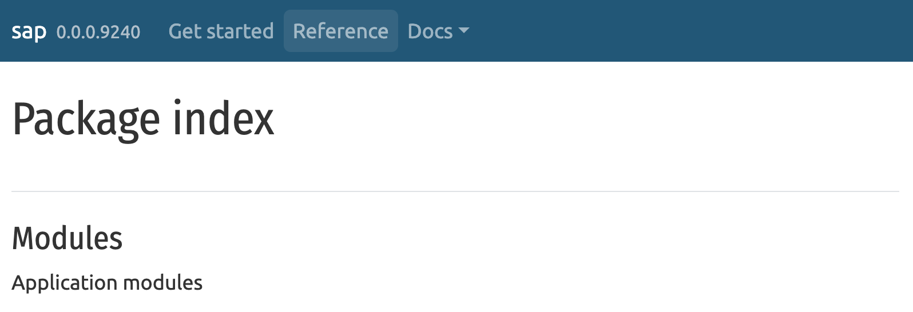
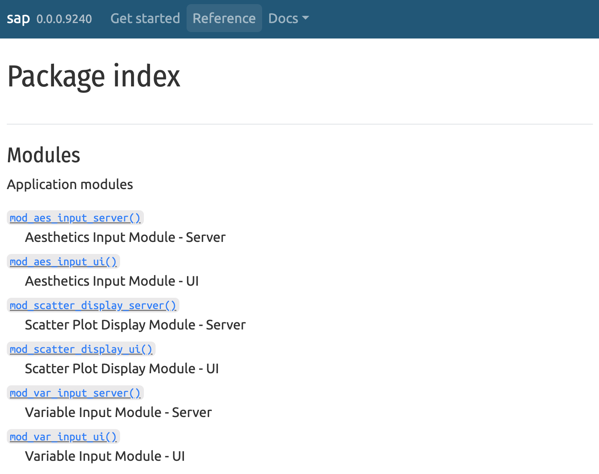
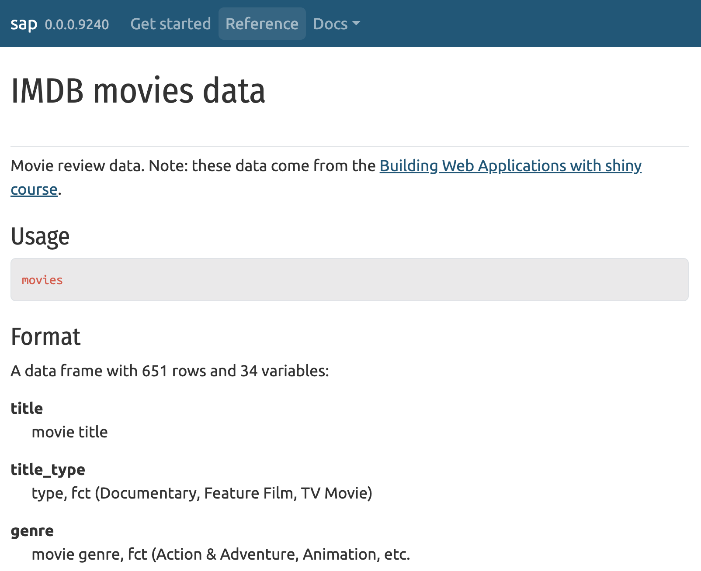

# install.packages('pak')
pak::pak('mjfrigaard/shinypak')17 pkgdown
Building a website for your new app-package
TLDR 
pkgdown is handy for creating beautiful, functional websites for your app-package. Package sites help share your app-package with others in a more engaging and informative way.
Installation:
install.packages('pkgdown)`Setup: create a configuration file that
pkgdownwill use to build your site with one of theusethisfunctions below:usethis::use_pkgdown() # or usethis::use_pkgdown_github_pages()- These create a
_pkgdown.ymlfile that lets us customize how our site looks and which parts of our app-package are diplayed/highlighted.
- These create a
Building Your Site: You can build a site with
pkgdown::build_site()or . This command tells pkgdown to go through your R package, including the documentation, vignettes, and examples (like your Shiny app), and assemble them into a coherent, navigable website.
Customization: pkgdown allows for significant customization. You can choose themes, organize your navigation bar, and even add custom pages. This means you can create a landing page for your Shiny app, provide detailed examples of how it works, and link to any additional resources or documentation.
Deployment: After building your site, you’ll need to deploy it so others can visit. Often, this involves uploading the generated website files to a web server or using services like GitHub Pages, which can host your package website directly from your GitHub repository.
In this chapter, we will delve into how to set up a pkgdown website for our app-package, from installation and initial setup to customization and deployment with GitHub Actions. pkgdown can be configured to automatically generate a beautiful website using the existing documentation files in our app-package.
17.1 Setup
A pkgdown website makes our Shiny app and its accompanying package more accessible to potential users by providing them with a central location for any information they need (app features, updates, etc.).
install.packages("pkgdown")pkgdown has a usethis function similar to testthat for setup:1
usethis::use_pkgdown_github_pages()use_pkgdown_github_pages() takes care of (most of) the setup for our app-package website, but we’ll break down the steps below.2 I’ve replaced my GitHub username with <username> and the name of the app-package/repository with <pkgName>):
17.1.1 _pkgdown.yml
The initial output after running use_pkgdown_github_pages() looks something like the following:
✔ Setting active project to '/Users/<username>/projects/<pkgName>'
✔ Adding '^_pkgdown\\.yml$', '^docs$', '^pkgdown$' to '.Rbuildignore'
✔ Adding 'docs' to '.gitignore'
✔ Writing '_pkgdown.yml'
• Modify '_pkgdown.yml'
✔ Recording 'https://<username>.github.io/<pkgName>/' as site's url in '_pkgdown.yml'
✔ Adding 'https://<username>.github.io/<pkgName>/' to URL
✔ Setting 'https://<username>.github.io/<pkgName>/' as homepage of GitHub repo '<username>/<pkgName>'_pkgdown.yml is initially created with only the url, template, and bootstrap version:
url: https://<username>.github.io/<pkgName>/
template:
bootstrap: 5These fields are all that’s required to launch your pkgdown site, but in the following sections we’ll cover how to edit _pkgdown.yml to customize the fonts, colors, contents, and layout of our site.
17.1.2 gh-pages branch
use_pkgdown_github_pages() sets up publishing our app-package site from an ‘orphan branch from GitHub pages’:
✔ Initializing empty, orphan 'gh-pages' branch in GitHub repo '<username>/<pkgName>'
✔ GitHub Pages is publishing from:
• URL: 'https://<username>.github.io/<pkgName>/'
• Branch: 'gh-pages'An orphan branch is a new Git branch with no commit history, effectively starting a new ‘root’ in our project’s development history. For our app-package, the gh-pages branch serves as a new line of development, completely separated from the all the other branches.
We’re also told GitHub pages will be publishing our app-package website at the following URL: https://<username>.github.io/<pkgName>/
17.1.3 .github/workflows/
use_pkgdown_github_pages() creates a GitHub Action workflow folder (.github/workflows/) with a YAML file (pkgdown.yaml):
• Path: '/'
✔ Creating '.github/'
✔ Adding '^\\.github$' to '.Rbuildignore'
✔ Adding '*.html' to '.github/.gitignore'
✔ Creating '.github/workflows/'
✔ Saving 'r-lib/actions/examples/pkgdown.yaml@v2' to '.github/workflows/pkgdown.yaml'
• Learn more at <https://github.com/r-lib/actions/blob/v2/examples/README.md>.We’re also told the contents in this file are copied from the r-lib/actions repository (which we’ve covered previously in Chapter 15 and Section 16.1).
17.2 Build
usethis has two functions for building your pkgdown site: build_site() and build_site_github_pages(). Since we used usethis::use_pkgdown_github_pages() to configure our site, we’ll use build_site_github_pages() to build our site.
pkgdown::build_site_github_pages()In the following sections, we’ll take a look at how the files and folders in our app-package are used to create the site’s contents. The great thing about pkgdown sites is that they use our existing package structure to build a beautiful site that’s easy to navigate (with minimal changes).
17.2.1 docs/
The docs/ folder contains the .html files for our website (that’s why ^docs$ was added to the .Rbuildignore and docs was added to the .gitignore):
== Building pkgdown site ======================================================
Reading from: '/Users/<username>/<pkgName>'
Writing to: '/Users/<username>/<pkgName>/docs'After creating a home for our site contents, the site initialization files are copied from the local pkgdown installation into docs/:
-- Initialising site ----------------------------------------------------------
Copying 'local/library/pkgdown/BS3/assets/bootstrap-toc.css' to 'bootstrap-toc.css'
Copying 'local/library/pkgdown/BS3/assets/bootstrap-toc.js' to 'bootstrap-toc.js'
Copying 'local/library/pkgdown/BS3/assets/docsearch.css' to 'docsearch.css'
Copying 'local/library/pkgdown/BS3/assets/docsearch.js' to 'docsearch.js'
Copying 'local/library/pkgdown/BS3/assets/link.svg' to 'link.svg'
Copying 'local/library/pkgdown/BS3/assets/pkgdown.css' to 'pkgdown.css'
Copying 'local/library/pkgdown/BS3/assets/pkgdown.js' to 'pkgdown.js'We won’t be interacting with these files directly, but it’s helpful to know this step is performed each time the build function is run.
17.2.2 README.md > index.html
-- Building home --------------------------------------------------------------
Writing 'authors.html'
Writing '404.html'The authors.html is built from the Author and Maintainer fields in the DESCRIPTION file. The README.md file in our root folder will be used to create the landing page (https://<username>.github.io/<pkgName>/index.html) for our site.
Long-form documentation can be stored in vignettes (Section 1.14.3) which will be converted into articles (covered below).
17.2.3 man/ > Reference
The functions from our app-package are converted into a Reference menu item (Chapter 5):
-- Building function reference ------------------------------------------------
Writing 'reference/index.html'
Reading 'man/display_type.Rd'
Writing 'reference/display_type.html'
Reading 'man/ggp2_movies_app.Rd'
Writing 'reference/ggp2_movies_app.html'
Reading 'man/mod_scatter_display_server.Rd'
Writing 'reference/mod_scatter_display_server.html'
Reading 'man/mod_scatter_display_ui.Rd'
Writing 'reference/mod_scatter_display_ui.html'
Reading 'man/mod_var_input_server.Rd'
Writing 'reference/mod_var_input_server.html'
Reading 'man/mod_var_input_ui.Rd'
Writing 'reference/mod_var_input_ui.html'
Reading 'man/movies.Rd'
Writing 'reference/movies.html'
Reading 'man/movies_app.Rd'
Writing 'reference/movies_app.html'
Reading 'man/movies_server.Rd'
Writing 'reference/movies_server.html'
Reading 'man/movies_ui.Rd'
Writing 'reference/movies_ui.html'
Reading 'man/scatter_plot.Rd'
Writing 'reference/scatter_plot.html'
Reading 'man/test_logger.Rd'
Writing 'reference/test_logger.html'Functions will only be included in the Reference if they’ve been exported (see Section 6.1)
If we’ve been thorough in documenting, the
@seealsoand@familytags will create hyperlinks between our utility functions, modules, UI/server/standalone app functions (see Section 5.2)The
@exampleswill be run and displayed (Section 5.1.4)
17.2.4 vignettes >> Articles
Any of the .Rmd in the vignettes folder will be rendered as HTML articles under the Articles menu item. The exception to this is any vignettes with the same name as our app-package (which will automatically be listed under a menu dropdown titled “Get Started”):3
-- Building articles ----------------------------------------------------------
Writing 'articles/index.html'
Reading 'vignettes/moviesApp.Rmd'
Writing 'articles/moviesApp.html'
Reading 'vignettes/specs.Rmd'
Writing 'articles/specs.html'
Writing 'sitemap.xml'
== DONE ======================================================================vignettes/
├── moviesApp.Rmd
└── specs.Rmd
1 directory, 2 filesThe final step in the build process is to add a .nojekyll file in the repository (this hidden file is necessary for pkgdown sites configured to deploy from GitHub pages).
-- Extra files for GitHub pages ----------------------------------------------
Writing '.nojekyll'17.3 Layouts
We can customize the look of our pkgdown site by editing the contents of _pkgdown.yml.
17.3.1 Themes, colors and fonts
Below are some examples of the fields that control the bootswatch theme (<THEME>), code syntax highlighting(<HIGHLIGHTING>):
Fields
template:
bootstrap: 5
bootswatch: <THEME>
theme: <HIGHLIGHTING>In _pkgdown.yml
template:
bootstrap: 5
bootswatch: united
theme: atom-one-lightWe can use the bslib package for additional control over the fonts and colors on our site. The <COLOR> should be replaced with a color hex, and <FONT> can include any freely available Google fonts.4
Fields
bslib:
primary: "<COLOR>"
code-color: "<COLOR>"
code-bg: "<COLOR>"
base_font:
google: <FONT>
heading_font:
google: <FONT>
code_font:
google: <FONT>In _pkgdown.yml
bslib:
primary: "#007987"
secondary: "#f5feff"
base_font:
google: Ubuntu
heading_font:
google: Fira Sans Condensed
code_font:
google: Inconsolata17.3.2 Articles
The navbar components can also be customized with titles, sections, and article names. In _pkgdown.yml, the articles are listed under components, with a text title (<TITLE>):
Fields
navbar:
components:
articles:
text: <TITLE>In _pkgdown.yml
navbar:
components:
articles:
text: DocsSection and article titles are placed in text fields, listed under the menu (note the indentation), with a path to the html file:
Fields
text: <TITLE>
menu:
- text: "<SECTION>"
- text: <ARTICLE>
href: articles/<NAME>.htmlBelow I’ve listed the App Specifications vignette under a "Specs" section (see Chapter 11), and linked to articles/specs.html:
In _pkgdown.yml
text: Docs
menu:
- text: "Specs"
- text: App Specifications
href: articles/specs.htmlUse ------- with a text field to create horizontal separators between sections (without a corresponding href).
Fields
menu:
- text: "<SECTION>"
- text: <ARTICLE>
href: articles/<NAME>.html
- text: -------
- text: "<SECTION>"
- text: <ARTICLE>
href: articles/<NAME>.html
I’ve added a Features section and a Application Features vignette (stored in vignettes/features.Rmd and published to articles/features.html):
In _pkgdown.yml
text: Docs
menu:
- text: "Specs"
- text: App Specifications
href: articles/specs.html
- text: -------
- text: "Features"
- text: App Features
href: articles/features.htmlThe rendered output is below:
Rendered

17.3.3 Reference
pkgdown will automatically generate a Reference section for any object with an .Rd file in the man/ folder. This includes functions we’ve explicitly exported with (i.e., with @export) and functions we’ve documented with @keywords internal.5
By default, the function are sorted alphabetically, but we can customize them into sections with titles and descriptions using the fields below in _pkgdown.yml:
reference:
- title: "<TITLE>"
desc: >
<DESCRIPTION>
contents:
- <FUN>For example, we can include a section for the modules we’re exporting from our app-package:
In _pkgdown.yml
reference:
- title: "Modules"
desc: >
App modulesRendered

The _pkgdown.yml file must include all exported functions if you customize the reference field. If not, you’ll see an error when you try to build your site:
-- Building function reference ------------------------------------
Error in `check_missing_topics()`:
! All topics must be included in reference index
✖ Missing topics: <FUN>
ℹ Either add to _pkgdown.yml or use @keywords internalTo help organize and display the functions in your app-package, we can use tidyselect helpers6 in the bullets below contents.
For example, we can list modules with starts_with("mod"):7
In _pkgdown.yml
reference:
- title: "Modules"
desc: >
Application modules
contents:
- starts_with("mod")Rendered

The UI, server, and app functions can be captured with contains("movies"), but doing this places the development ggp2_movies_app() function above the primary standalone app function (movies_app()):
In _pkgdown.yml
- title: "App functions"
desc: "UI, server & app functions"
contents:
- contains("movies")Rendered

We have a few options here: 1) we can remove the ggp2_movies_app() function from the Reference by removing the @export or @keywords internal tags in R/ggp2_movies_app.R (see Section 6.1), 2) we can create a new section for this (and any other) development functions, or 3) we can reorganize the functions in this section by placing ggp2_movies_app (no parentheses) below the tidyselect helper.8
We can also use _pkgdown.yml to list any datasets (Chapter 7) we’re using (and documenting (see Section 7.3)) in our app-package.
In _pkgdown.yml
- title: "Data"
desc: "App data"
contents:
- moviesRendered

17.4 Deploy
The .github/workflows/pkgdown.yaml file automates building and deploying our app-package’s pkgdown site. This workflow file is configured to be triggered by specific GitHub events, build the website using the standard package files, then deploys it to GitHub Pages. Below we’ll breakdown the fields and values of the workflow (and their functions):
17.4.1 Triggers
- Set to trigger
onpushes orpull_requests made to themainormasterbranches (we’ll change these to only trigger on the21_pkgdownbranch).
on:
push:
branches: [main, master]
pull_request:
branches: [main, master]
- Also triggers when a
releaseis published, allowing the website to showcase the latest version of the package.9
release:
types: [published]
workflow_dispatchallows the workflow to be manually triggered from the GitHub Actions web interface (for ad-hoc updates).10
workflow_dispatch:17.4.2 Jobs
namedefines a single job with the IDpkgdown.
name: pkgdownjobsspecifies the job ID (pkgdown) and runs the job on the latest Ubuntu runner provided by GitHub Actions.
jobs:
pkgdown:
runs-on: ubuntu-latest- The comment
# Only restrict concurrency for non-PR jobsrefers to theconcurrencyfield, which prevents concurrent runs of the job for non-pull request events (avoiding conflicts or redundant deployments).11groupuses a dynamic expression to differentiate betweenpull_requestevents andgithub.event_name, using the run ID (github.run_id) for pull requests to allow concurrency.12
concurrency:
group: pkgdown-${{ github.event_name != 'pull_request' || github.run_id }}envsets theGITHUB_PATenvironment variable using the GitHub token (secrets.GITHUB_TOKEN), allowing the workflow to authenticate and perform operations within the repository.
env:
GITHUB_PAT: ${{ secrets.GITHUB_TOKEN }}permissionsexplicitly grants the workflowwritepermissions to the repository, enabling it to push changes (like an updated website).
permissions:
contents: write17.4.3 Steps
7. Checks out the repository’s code, making it available to subsequent steps.
steps:
- uses: actions/checkout@v48. Installs Pandoc, which is necessary for rendering markdown documents and vignettes within our pkgdown site.
- uses: r-lib/actions/setup-pandoc@v29. Sets up the R environment and configures it to use the public RSPM (RStudio Package Manager) for faster package installations.
- uses: r-lib/actions/setup-r@v2
with:
use-public-rspm: true10. Installs dependencies required by our app-package and pkgdown.
- uses: r-lib/actions/setup-r-dependencies@v2
a. extra-packages specifies installing any::thing from pkgdown and the local:: package (our app-package).13
with:
extra-packages: any::pkgdown, local::.
needs: website11. Executes pkgdown::build_site_github_pages() within an R script shell to build the pkgdown website. It’s configured not to start a new R process for the build and not to install our app-package (assuming dependencies are already handled in step 10).
- name: Build site
run: pkgdown::build_site_github_pages(new_process = FALSE, install = FALSE)
shell: Rscript {0}12. Uses JamesIves/github-pages-deploy-action@v4.5.0 to deploy the site to GitHub Pages (only if the event is not a pull request).
- name: Deploy to GitHub pages 🚀
if: github.event_name != 'pull_request'
uses: JamesIves/github-pages-deploy-action@v4.5.0
a. Specifies not to clean the deployment branch, deploys it to the gh-pages branch, and sets the site content source folder as the docs directory.
with:
clean: false
branch: gh-pages
folder: docspkgdown.yml allows us to maintain and showcase up-to-date package documentation for users, contributors, and collaborators.
17.4.4 GitHub
Below we can see our previous workflows from Section 16.1.3, Section 16.2, and Section 16.3:

Launch app with the shinypak package:
launch('17_pkgdown') ╭━━━╮╭╮╭╮╱╭╮╱╱╭╮╱╱╭━━━╮
┃╭━╮┣╯╰┫┃╱┃┃╱╱┃┃╱╱┃╭━╮┃
┃┃╱╰╋╮╭┫╰━╯┣╮╭┫╰━╮┃╰━╯┣━━┳━━┳━━┳━━╮
┃┃╭━╋┫┃┃╭━╮┃┃┃┃╭╮┃┃╭━━┫╭╮┃╭╮┃┃━┫━━┫
┃╰┻━┃┃╰┫┃╱┃┃╰╯┃╰╯┃┃┃╱╱┃╭╮┃╰╯┃┃━╋━━┃
╰━━━┻┻━┻╯╱╰┻━━┻━━╯╰╯╱╱╰╯╰┻━╮┣━━┻━━╯
╱╱╱╱╱╱╱╱╱╱╱╱╱╱╱╱╱╱╱╱╱╱╱╱╱╭━╯┃
╱╱╱╱╱╱╱╱╱╱╱╱╱╱╱╱╱╱╱╱╱╱╱╱╱╰━━╯
╭━━━╮╱╱╱╱╱╭╮╱╱╱╱╱╱╱╱╭━━━╮╱╱╭╮
╰╮╭╮┃╱╱╱╱╱┃┃╱╱╱╱╱╱╱╱┃╭━╮┃╱╭╯╰╮
╱┃┃┃┣━━┳━━┫┃╭━━┳╮╱╭╮┃┃╱┃┣━┻╮╭╋┳━━┳━╮
╱┃┃┃┃┃━┫╭╮┃┃┃╭╮┃┃╱┃┃┃╰━╯┃╭━┫┃┣┫╭╮┃╭╮╮
╭╯╰╯┃┃━┫╰╯┃╰┫╰╯┃╰━╯┃┃╭━╮┃╰━┫╰┫┃╰╯┃┃┃┃
╰━━━┻━━┫╭━┻━┻━━┻━╮╭╯╰╯╱╰┻━━┻━┻┻━━┻╯╰╯
╱╱╱╱╱╱╱┃┃╱╱╱╱╱╱╭━╯┃
╱╱╱╱╱╱╱╰╯╱╱╱╱╱╱╰━━╯
💖 Support: https://github.com/sponsors/JamesIves
📣 Maintained by James Ives: https://jamesiv.es
🚀 Getting Started Guide: https://github.com/JamesIves/github-pages-deploy-action
❓ Discussions / Q&A: https://github.com/JamesIves/github-pages-deploy-action/discussions
🔧 Report a Bug: https://github.com/JamesIves/github-pages-deploy-action/issuesChecking configuration and starting deployment… 🚦
Deploying using Deploy Token… 🔑
Configuring git…
/usr/bin/git config --global --add safe.directory /home/runner/work/<pkgName>/<pkgName>
/usr/bin/git config user.name <username>
/usr/bin/git config user.email <username>@pm.me
/usr/bin/git config core.ignorecase false
/usr/bin/git config --local --unset-all http.https://github.com/.extraheader
/usr/bin/git remote rm origin
/usr/bin/git remote add origin ***github.com/<username>/<pkgName>.git
Git configured… 🔧
Starting to commit changes…
/usr/bin/git ls-remote --heads ***github.com/<username>/<pkgName>.git refs/heads/gh-pages
7cac1013e4a324d943d2b33ed6d52f0cf6b243a6 refs/heads/gh-pages
Creating worktree…
/usr/bin/git fetch --no-recurse-submodules --depth=1 origin gh-pages
From https://github.com/<username>/<pkgName>
* branch gh-pages -> FETCH_HEAD
* [new branch] gh-pages -> origin/gh-pages
/usr/bin/git worktree add --no-checkout --detach github-pages-deploy-action-temp-deployment-folder
Preparing worktree (detached HEAD 742bb18)
/usr/bin/git checkout -B gh-pages origin/gh-pages
Previous HEAD position was 742bb18 pkgdown build
Switched to a new branch 'gh-pages'
branch 'gh-pages' set up to track 'origin/gh-pages'.
/usr/bin/chmod -R +rw /home/runner/work/<pkgName>/<pkgName>/docs
/usr/bin/rsync -q -av --checksum --progress /home/runner/work/<pkgName>/<pkgName>/docs/. github-pages-deploy-action-temp-deployment-folder --exclude .ssh --exclude .git --exclude .github
Checking if there are files to commit…
/usr/bin/git add --all .
/usr/bin/git checkout -b github-pages-deploy-action/kpvxdgnej
Switched to a new branch 'github-pages-deploy-action/kpvxdgnej'
/usr/bin/git commit -m Deploying to gh-pages from @ <username>/<pkgName>@742bb18e236034c3ce28743171f7a04cc53be96c 🚀 --quiet --no-verify
Force-pushing changes...
/usr/bin/git push --force ***github.com/<username>/<pkgName>.git github-pages-deploy-action/kpvxdgnej:gh-pages
To https://github.com/<username>/<pkgName>.git
7cac101..aab5105 github-pages-deploy-action/kpvxdgnej -> gh-pages
Changes committed to the gh-pages branch… 📦
Running post deployment cleanup jobs… 🗑️
/usr/bin/git checkout -B github-pages-deploy-action/kpvxdgnej
Reset branch 'github-pages-deploy-action/kpvxdgnej'
/usr/bin/chmod -R +rw github-pages-deploy-action-temp-deployment-folder
/usr/bin/git worktree remove github-pages-deploy-action-temp-deployment-folder --force
Completed deployment successfully! ✅
Recap:
pkgdown
usethisalso has a generic function for usingpkgdown(use_pkgdown()), but we’re going to cover building and deploying our app-package site using GitHub pages. Read more aboutuse_pkgdown()in theusethisdocumentation.↩︎Internally, this function calls
usethis::use_pkgdown(),usethis::use_github_pages(), andusethis::use_github_action("pkgdown"). Read more in theusethisdocumentation.↩︎I created this vignette with
usethis::use_vignette("moviesApp")and included instructions for launching the various apps inmoviesApp.↩︎Read more about
bslibinpkgdownsites in the documentation.↩︎Functions with
@keywords internalaren’t listed in the package index, but can be accessed withpkg:::fun()(like thetest_logger()function inmoviesApp).↩︎Using the
mod_as a prefix for module functions is a habit I’ve adopted from thegolempackage (specifically, theadd_module()function).↩︎“You can create releases to bundle and deliver iterations of a project to users.”↩︎
“To enable a workflow to be triggered manually, you need to configure the
workflow_dispatchevent.”↩︎“Use concurrency to ensure that only a single job or workflow using the same concurrency group will run at a time.”↩︎
“Concurrency groups provide a way to manage and limit the execution of workflow runs or jobs that share the same concurrency key.”↩︎
The
needs: websitepart might be a placeholder? I’m unaware of theneedskeyword applied within awithclause for setting up dependencies. This also could be intended as a comment or note for future adjustments…↩︎